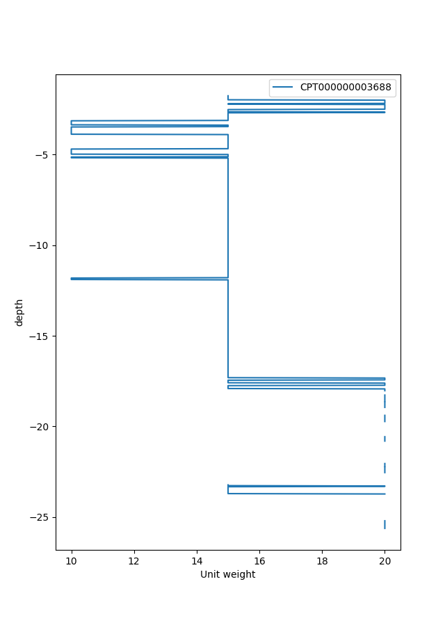

Tutorial Custom Cpt interpretation using GEOLIB+¶
Following this tutorial the user can learn how to create a custom interpretation class using GEOLIB+.
Because the RobertsonCptInterpretation class
might not have specific functionalities desired by the user.
In the following example, a custom cpt interpretation method is created called “qc only rule”. In this example, the classification of the soil depends solely on the cpt cone resistance. In this example, the user wants to fulfill the following two requirements:
The class must be able to classify the soil into “clay”, “peat” and “sand” based on a provided shapefile.
The class must be able to determine the unit weight of the soil based on the soil classification.
In the following figure, a visual representation of the new interpretation model is presented after plotting it.
As a first step the user creates a shapefile that represents the qc-only classification method. The user can do this by using the following python code:
from pathlib import Path
from shapely import geometry
import shapefile
# define points
A = geometry.Point(0, 0.1)
B = geometry.Point(10, 0.1)
C = geometry.Point(0, 1)
D = geometry.Point(10, 1)
E = geometry.Point(0, 40)
F = geometry.Point(10, 40)
G = geometry.Point(0, 1000)
H = geometry.Point(10, 1000)
# define polygons
polygon_sand = geometry.Polygon([[p.x, p.y] for p in [G, H, F, E]])
polygon_clay = geometry.Polygon([[p.x, p.y] for p in [E, F, D, C]])
polygon_peat = geometry.Polygon([[p.x, p.y] for p in [C, D, B, A]])
shapefile_polygon = {
"sand": polygon_sand,
"clay": polygon_clay,
"peat": polygon_peat,
}
# write shapefile
shapefile_location = Path("qc_only_rule")
w = shapefile.Writer(shapefile_location)
w.field("name", "C")
final_list = []
for key, value in shapefile_polygon.items():
final_list.append(list(zip(value.exterior.xy[0], value.exterior.xy[1])))
w.poly([list(zip(value.exterior.xy[0], value.exterior.xy[1]))])
w.record(key)
w.close()
The user can also check if the shapefile contains the correct geometry by plotting it.
import matplotlib.pyplot as plt
# Plot Shape file
sf = shapefile.Reader(Path('qc_only_rule'))
print('number of shapes imported:', len(sf.shapes()))
plt.figure()
for shape in list(sf.iterShapeRecords()):
x_lon, y_lat = zip(*shape.shape.points)
plt.fill(x_lon, y_lat, label=shape.record.name)
plt.xlabel("Friction ratio (Fr) [%]")
plt.ylabel("Cone resistance (qc) [MPa]")
plt.yscale('log')
plt.legend()
plt.show()
Then the user should make their own custom interpretation class which should inherit for the AbstractInterpretationMethod.
In the following example the class created is named CustomCptInterpretation, this class inherits from both
AbstractInterpretationMethod and BaseModel.
The properties of this class are:
cpt_data: Which contains the cpt data as read by GEOLIB+
soil_types_for_classification: Which is a dictionary of values that are read from the soil classification shapefile.
path_shapefile: The path to the soil classification shapefile.
unit_weight_soil: A list of the final unit weight results
Apart from that there are three different functions included in the CustomCptInterpretation class.
The function interpret is the one that should always be defined by the user as it is also part of
the AbstractCPT class.
Note
To find out more about the concept of inheritance in python see <https://docs.python.org/3/tutorial/classes.html> and <https://www.w3schools.com/python/python_inheritance.asp> .
from typing import Dict, List, Optional
from geolib_plus.cpt_base_model import AbstractInterpretationMethod, AbstractCPT
from pathlib import Path
import shapefile
from pydantic import BaseModel
class CustomCptInterpretation(AbstractInterpretationMethod, BaseModel):
cpt_data: AbstractCPT = None
soil_types_for_classification: Dict = {}
path_shapefile: Optional[Path] = None
unit_weight_soil: List = []
def interpret(self, cpt: AbstractCPT):
"""
Function that interprets the cpt inputs.
Lithology for each layer is determined according to
the qc only method. Note that the pre_process method
should be run before the interpret method.
"""
# import cpt
self.cpt_data = cpt
# Perform unit tranformations
self.cpt_data.friction = self.cpt_data.friction * 100
self.cpt_data.friction[self.cpt_data.friction > 10] = 10
# read soil classification from shapefile
self.soil_types()
# calculate lithology
self.lithology()
# calculate unit weights based on the lithology found
self.unit_weight()
def unit_weight(self):
"""
Function that determines the unit weight of different soil types depending
on the classification type.
"""
unit_weight = []
typical_unit_weight_sand = 20
typical_unit_weight_clay = 15
typical_unit_weight_peat = 10
for soil_type in self.cpt_data.lithology:
if soil_type == "sand":
unit_weight.append(typical_unit_weight_sand)
elif soil_type == "clay":
unit_weight.append(typical_unit_weight_clay)
elif soil_type == "peat":
unit_weight.append(typical_unit_weight_peat)
else:
unit_weight.append(None)
self.unit_weight_soil = unit_weight
def point_intersects_one_polygon(self, point):
for soil_name, polygon in self.soil_types_for_classification.items():
if point.intersects(polygon):
return soil_name
return None
def lithology(self):
"""
Function that reads a soil classification shapefile.
"""
# determine into which soil type the point is
lithology = []
for counter in range(len(self.cpt_data.friction)):
point_to_check = geometry.Point(
self.cpt_data.tip[counter], self.cpt_data.friction[counter]
)
lithology.append(self.point_intersects_one_polygon(point_to_check))
self.cpt_data.lithology = lithology
def soil_types(self):
"""
Function that read shapes from shape file and passes them as Polygons.
"""
# read shapefile
sf = shapefile.Reader(str(self.path_shapefile))
for polygon in list(sf.iterShapeRecords()):
self.soil_types_for_classification[polygon.record.name] = geometry.Polygon(
polygon.shape.points
)
After defining the custom class the user can use it in the following way. First of all, the user has to read a cpt and perform a pre_process calculation:
from geolib_plus.gef_cpt import GefCpt
from pathlib import Path
cpt_file_gef = Path("cpt", "gef", "test_cpt.gef")
# initialize models
cpt_gef = GefCpt()
# read the cpt for each type of file
cpt_gef.read(cpt_file_gef)
# do pre-processing of the gef file
cpt_gef.pre_process_data()
Secondly, the interpret class should be called and the interpretation can be performed.
# call custom interpretation class
interpreter = CustomCptInterpretation()
interpreter.path_shapefile = Path("qc_only_rule.shp")
# use GEOLIB+ to run interpreter
cpt.interpret_cpt(interpreter)
After the interpretation is performed the user can inspect the results. Plotting them is an easy method to inspect the outcomes. To do that use the following code block.
import matplotlib.pyplot as plt
plt.figure()
plt.plot(
interpreter.unit_weight_soil,
cpt.depth_to_reference,
label=cpt.name,
)
plt.xlabel("Unit weight")
plt.ylabel("depth")
plt.legend()
plt.show()
The final plot can be observed after the interpretation is performed.

{kind=link}
{kind=link}